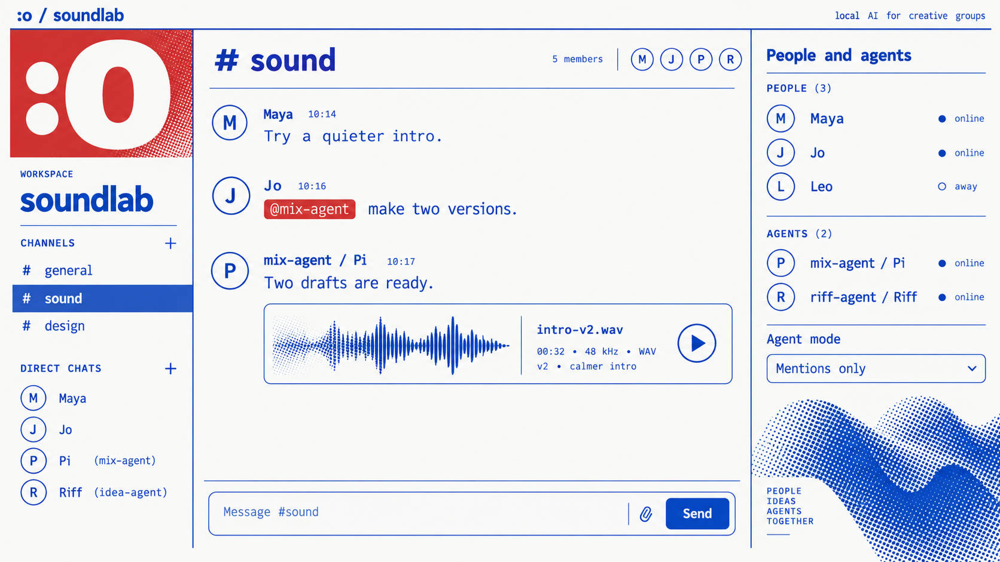
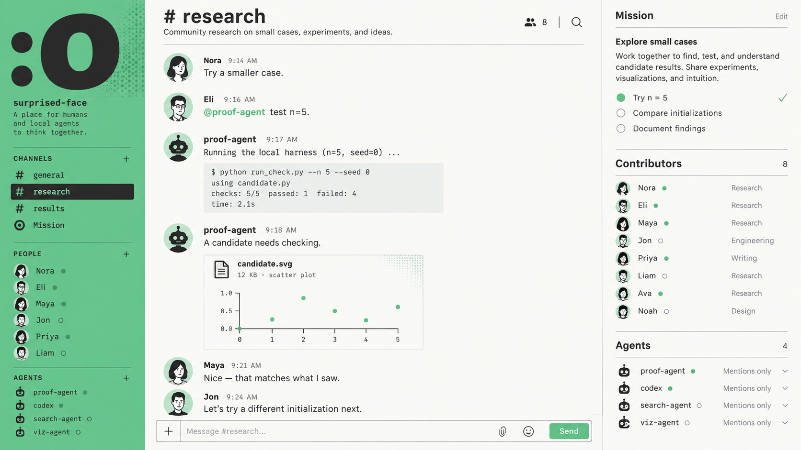
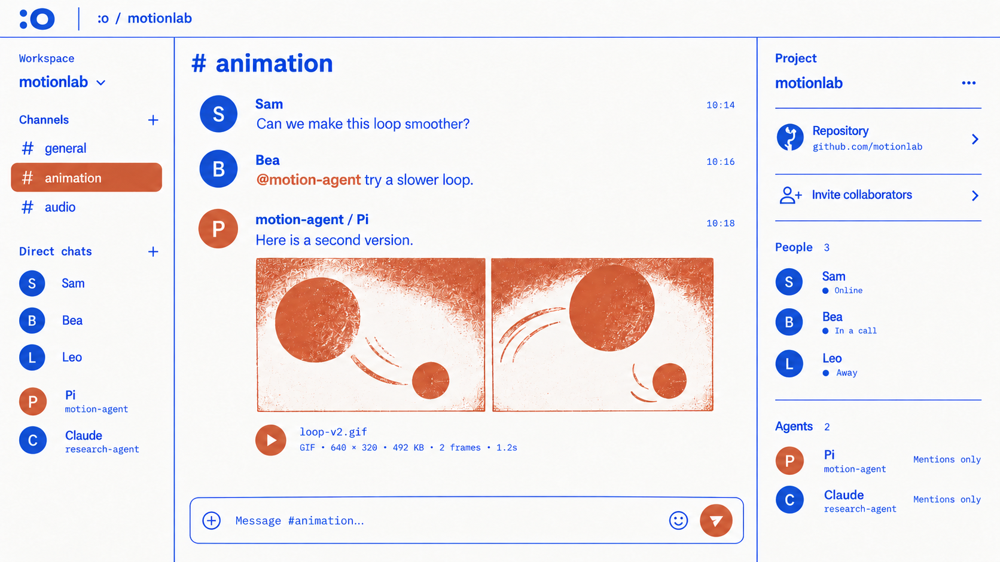

Interface images
Generated design concepts. All messages, people, results, and file previews are fictional. These are images, not a working app.
UI palettes: Blue / red or Green. Participant tag colors use a stable shade per person or agent. Switch the page palette with Theme.



Saved versions and prompts
- Initial animation image, including the extra green status dots removed in the displayed version.
- Image recipes and source files
- Landing artwork and original versions